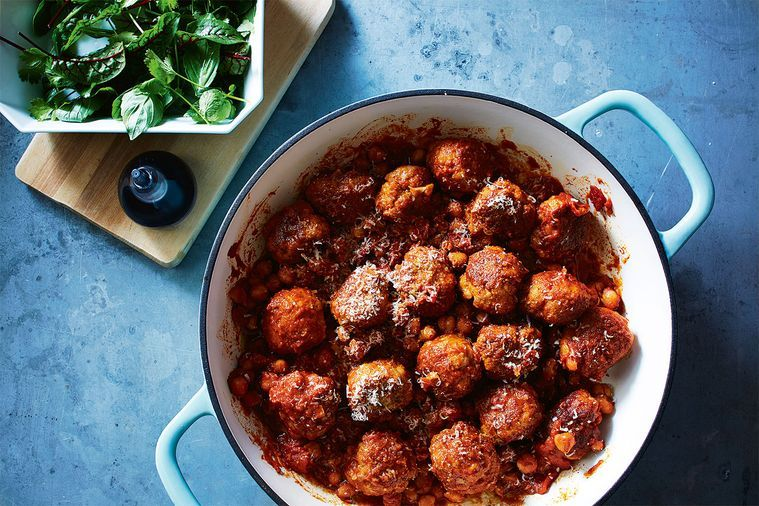

Sausage meatballs with chickpeas
This a "paleo" take on the classic spaghetti and meatballs dish by replacing the noodles with chickpeas for added protein. Good dinner choice for body-builders
Ingredients
- 700g pork and fennel sausages (or other pork sausages)
- 2 tbs extra virgin olive oil
- 2 garlic cloves, whole, crushed with knife
- 400g can chickpeas, rinsed and drained
- 400g can Ardmona Diced Tomatoes
- 2 tbs tomato paste
- 1⁄2 cup (125ml) red wine
- Grated parmesan to serve
- Mixed salad leaves to serve
Method
- Remove sausages from their casings. Season with pepper and then form into meatballs using about 11⁄2 tbs mixture.
- Heat oil in a large, heavy-based pan. Add the meatballs and cook, turning, for 4-5 minutes until golden. Add the garlic and cook, tossing to coat, for 1 minute.
- Add the chickpeas, tomatoes, tomato paste, wine and 1⁄2 cup (125ml) water. Bring to a simmer, season and cook for 8-10 minutes until sauce has reduced.
- Top with grated parmesan and serve with mixed salad.